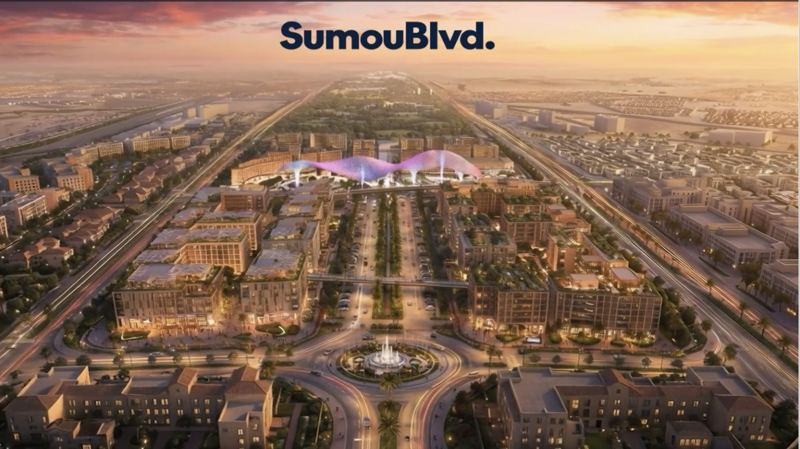
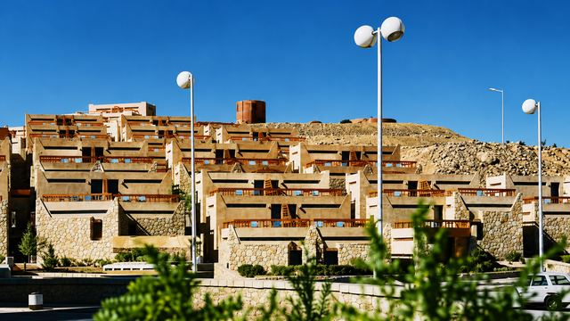
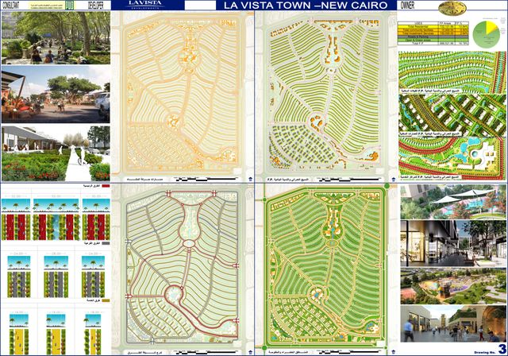
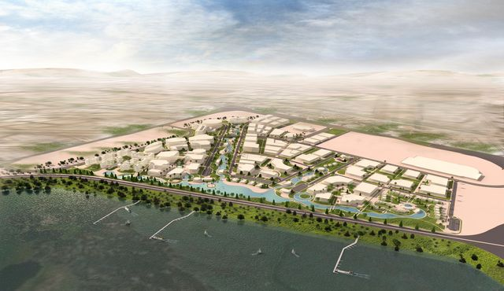
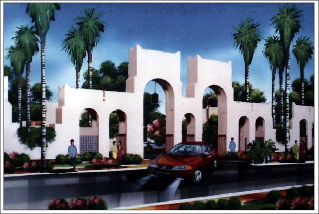

Prof. Dr. Amr Attia speaks at SHARE Kazakhstan in Almaty on 24 and 25 November. Read his profile
Prof. Dr. Amr Attia is Board Chairman of SHARE Egypt 2026, at the Grand Egyptian Museum on 13 and 14 December. News and events
Urban planning and master planning in Egypt
PUD has 106 projects in Egypt between 1964 and 2026, including Somou Boulevard, New Cairo, Pyramids Plateau Destination Master Plan and Golden Gate, New Cairo. The work covers master plans, tourism projects and mixed-use developments.
1960s2 projects
1970s8 projects
1980s9 projects
1990s10 projects
2000s29 projects
2010s13 projects
2020s17 projects
Cities and regions
Cairo 24North Coast 15Giza 66th of October City 6Marsa Matrouh 6Alexandria 5New Cairo 4Ain El Sokhna 4Hurghada 3Sheikh Zayed City 3Marsa Alam 2Ras El Hekma 2Assiut 2Minya 2Zamalek 2Cairo-Alexandria Desert Road 2New Administrative Capital 1New Alamein 1Gargoub 1Shorouq City 1Port Said 1New Damietta 1Mansoura 1Tanta 1Dahab 1Aswan 1Kafr El-Zayat 110th of Ramadan City 1Obour City 16th of October City and Ismailia 1West Arabella 1Taba-Nuweiba coast 1Luxor 1Ismailia 1El-Arish 1Nag Hammadi 1
All projects in Egypt

Somou Boulevard, New CairoMostakbal City, New Cairo · 2026 Pyramids Plateau Destination Master PlanGiza · 2024-2025
Pyramids Plateau Destination Master PlanGiza · 2024-2025 Golden Gate, New CairoNew Cairo · 2020-2021
Golden Gate, New CairoNew Cairo · 2020-2021 Regional Vision for the North Coast and Tourism Development Master Plan for Fuka-MatrouhFuka-Matrouh sub-region, North Coast · 2011
Regional Vision for the North Coast and Tourism Development Master Plan for Fuka-MatrouhFuka-Matrouh sub-region, North Coast · 2011 Marina Matrouh Tourist CentreMarsa Matrouh, North Coast · 1994-2004
Marina Matrouh Tourist CentreMarsa Matrouh, North Coast · 1994-2004 Hilton Dahab Village HotelDahab, Sinai · 1991
Hilton Dahab Village HotelDahab, Sinai · 1991 Marina El AlameinNorth Coast · 1985-1997
Marina El AlameinNorth Coast · 1985-1997
Tut Amun Village Hotel and ResortAswan · 1981 Cairo Media CityGiza · 2026
Cairo Media CityGiza · 2026 New Administrative Capital: Strategic Advisory, Phases 2 to 4New Administrative Capital · 2025
New Administrative Capital: Strategic Advisory, Phases 2 to 4New Administrative Capital · 2025 Port Ghalib Master PlanMarsa Alam · 2025
Port Ghalib Master PlanMarsa Alam · 2025
La Vista Town, New CairoNew Cairo · 2023 Ramla Concept Master PlanNorth Coast · 2023
Ramla Concept Master PlanNorth Coast · 2023 Al Alamein Riviera Vision Master PlanNorth Coast (New Alamein) · 2022
Al Alamein Riviera Vision Master PlanNorth Coast (New Alamein) · 2022 Madaar Ras El Hekma (Azha Ras Al Hekma)Ras El Hekma, North Coast · 2022
Madaar Ras El Hekma (Azha Ras Al Hekma)Ras El Hekma, North Coast · 2022 Abu Qir City and Port ExtensionAbu Qir, Alexandria · 2021
Abu Qir City and Port ExtensionAbu Qir, Alexandria · 2021 Gargoub New Port CityGargoub, Matrouh · 2021
Gargoub New Port CityGargoub, Matrouh · 2021 Heliopark Concept MasterplanNew Cairo · 2021
Heliopark Concept MasterplanNew Cairo · 2021 Elysium Mixed Use DevelopmentShorouq City · 2020
Elysium Mixed Use DevelopmentShorouq City · 2020 Branding Manual and Technical Specifications for the Commercial Registry and Notary OfficesEgypt · 2016
Branding Manual and Technical Specifications for the Commercial Registry and Notary OfficesEgypt · 2016 Fanarah Tourist ResortJefeira, North Coast · 2016
Fanarah Tourist ResortJefeira, North Coast · 2016 Three Tunnels under the Suez CanalPort Said (Suez Canal) · 2015
Three Tunnels under the Suez CanalPort Said (Suez Canal) · 2015 One Million Affordable Housing Units: Minya Land-Use PlanMinya · 2014
One Million Affordable Housing Units: Minya Land-Use PlanMinya · 2014 Downtown Cairo RegenerationCairo · 2012
Downtown Cairo RegenerationCairo · 2012 Private Waterfront Property in HurghadaHurghada · 2011
Private Waterfront Property in HurghadaHurghada · 2011 Urban Renewal of the Faculty of Agriculture, Cairo UniversityGiza (Cairo University) · 2010
Urban Renewal of the Faculty of Agriculture, Cairo UniversityGiza (Cairo University) · 2010 Investors Tourism Village, New DamiettaNew Damietta City · 2008
Investors Tourism Village, New DamiettaNew Damietta City · 2008 Olympic Plaza Tower, MaadiMaadi, Cairo · 2008
Olympic Plaza Tower, MaadiMaadi, Cairo · 2008 Rotana Cafe, ZamalekZamalek, Cairo · 2008
Rotana Cafe, ZamalekZamalek, Cairo · 2008
Alex Gate Mixed Use DevelopmentAlexandria · 2006 Rotana Offices and Studios, Nile PlazaGarden City, Cairo · 2005
Rotana Offices and Studios, Nile PlazaGarden City, Cairo · 2005 Private Villas and Gardens, EgyptCairo · 2005-2008
Private Villas and Gardens, EgyptCairo · 2005-2008 Marina Matrouh Tourist Centre, Phase 3Marsa Matrouh, North Coast · 2004
Marina Matrouh Tourist Centre, Phase 3Marsa Matrouh, North Coast · 2004 Pyramisa Apartment Hotel and Shopping Mall, HurghadaHurghada · 2003
Pyramisa Apartment Hotel and Shopping Mall, HurghadaHurghada · 2003 The Royal OasisSheikh Zayed City · 2001
The Royal OasisSheikh Zayed City · 2001 Marina Matrouh Tourist Centre, Phase 2Marsa Matrouh, North Coast · 2000
Marina Matrouh Tourist Centre, Phase 2Marsa Matrouh, North Coast · 2000 Sukhna Heights Tourist ResortAin El Sokhna, Gulf of Suez · 1999
Sukhna Heights Tourist ResortAin El Sokhna, Gulf of Suez · 1999
Ain El Sokhna Tourist CentreAin El Sokhna, Gulf of Suez · 1998 Marina El Alamein Tourist Centre: Concept Master PlanNorth Coast · 1986
Marina El Alamein Tourist Centre: Concept Master PlanNorth Coast · 1986 Structure Planning for the North West Coast RegionNorth West Coast · 1982
Structure Planning for the North West Coast RegionNorth West Coast · 1982 Marakia Tourist VillageNorth West Coast (km 50-52 west of Alexandria) · 1981-1983
Marakia Tourist VillageNorth West Coast (km 50-52 west of Alexandria) · 1981-1983 Tourism Development Planning for the North West Coast RegionNorth West Coast · 1978
Tourism Development Planning for the North West Coast RegionNorth West Coast · 1978 Organ Transplant Centre, Nasser Institute for Research and TreatmentGreater Cairo
Organ Transplant Centre, Nasser Institute for Research and TreatmentGreater Cairo Green Egypt PackhouseGiza
Green Egypt PackhouseGiza Fragrance Factory (Greiss), 6th of October City6th of October CityBadya Mixed Use and Gate6th of October City · 2022ETAP Tourism DevelopmentRas El Hekma · 2022Palm Hills Golf Views Apartments6th of October City · 2022Cairo Airport CityCairo · 2012Asmaak Plaza, ZamalekZamalek, Cairo · 2011Castle Zaman HotelTaba-Nuweiba coast, South Sinai · 2011Cairo Gate Master PlanNasr City, Cairo · 2010Reflections Mixed Use ComplexSheikh Zayed City · 2010Abo Dabbab Marine Field StationMarsa Alam · 2009Green Star Hotels InitiativeEgypt · 2009Master Plan of the Faculty of Agriculture Campus, Cairo UniversityGiza (Cairo University) · 2009Reflections (Cleopatra Water Courts)Sheikh Zayed City · 2009Students' Affairs Complex, Faculty of Agriculture, Cairo UniversityGiza (Cairo University) · 2009Jewellery Factory and Headquarters, 6th of October City6th of October City · 2008Residential Complex, West Arabella, New CairoWest Arabella, New Cairo · 2008El-Khamayel City6th of October City · 2007Strategic Planning for Mansoura CityMansoura · 2007Strategic Planning for Tanta CityTanta · 2007Pastry Factory, Obour CityObour City · 2007Alex Gate Master Plan (Alexandria Growth Pole Project)Alexandria · 2006Farm House, Cairo-Alexandria Desert RoadCairo-Alexandria Desert Road · 2006Residential Compound, Al-Thawra Al-Khadra, Cairo-Alexandria Desert RoadCairo-Alexandria Desert Road · 2006Nahdet El Arab Tourism Complex, Phase 2Ain El Sokhna · 2003Strategic Planning for Rural Settlements in EgyptEgypt · 2003Directive Plans for Rural Settlements in EgyptEgypt · 2002Urban Renewal around Magra El Oyoun (Aqueducts), Historic CairoHistoric Cairo · 2002Faculty of Medicine Expansion Project, Ain Shams University (Second Stage)Abbassiya, Cairo · 2000Nahdet El Arab Tourism ComplexAin El Sokhna · 1997Crystal Asfour Factory and Headquarters ExtensionCairo · 1994Faculty of Medicine, Ain Shams University: Concept Master Plan (Phase 1)Abbassiya, Cairo · 1994Hurghada Apartments Hotel and Shopping MallHurghada · 1994Marina El Alamein Tourist Centre (Phase 3): VeniciaNorth Coast · 1992Continental Savoy Hotel and Shopping ComplexCairo · 1991Rivoli Commercial Complex and HotelCairo · 1988Residential, Administrative and Shopping Complex, Tahrir StreetCairo · 1987West Alexandria Regional Plan (Maxx to km 34)West of Alexandria · 1984The Nile Twin TowersCairo · 1980Al-Salam Oasis Master PlanningCairo-Alexandria desert road · 1979El-Shams City Master Planning, AssiutAssiut · 1979El-Shams City Masterplan (El-Kahira and El-Nasr Companies for Housing)Egypt · 1979Housing and Offices Complex in MaadiMaadi, Cairo · 1978Al-Tahrir Bus TerminalsCairo · 1972Regional and Urban Planning for Assiut GovernorateAssiut · 1972Potatoes Cold Stores in Minya and Kafr El-ZayatMinya and Kafr El-Zayat · 1970Lecture Halls and Research Institute, Ain Shams UniversityCairo · 1969Cotton Ginning Factories for El-Wadi and Delta CompaniesEgypt · 1964Elegect Company Headquarters, CairoCairoBaker Atlas Plant, MatrouhMarsa MatrouhHostess Factory Extensions, 10th of Ramadan City10th of Ramadan CityBank of Alexandria Branches (Cairo, Tanta, Mahalla, Alexandria)Cairo, Tanta, Mahalla and AlexandriaIndustrial Park Master Plans, 6th of October City and Ismailia6th of October City and IsmailiaResidential Compound, 6th of October City6th of October CityNasser Memorial Civic CentreEgyptPlanning of Luxor City and Its RegionLuxorObour Memorial and Museum, IsmailiaIsmailiaEl-Arish City Master PlanningEl-ArishResidential Quarters of Aluminium City, Nag HammadiNag HammadiSuez Canal Bank Headquarters, CairoCairoEl-Bustan Hotel, Recreational and Offices BuildingCairoHotel and Administrative Complex, Kasr El-Nil Street, CairoCairoIndustrial Union BuildingEgypt
Fragrance Factory (Greiss), 6th of October City6th of October CityBadya Mixed Use and Gate6th of October City · 2022ETAP Tourism DevelopmentRas El Hekma · 2022Palm Hills Golf Views Apartments6th of October City · 2022Cairo Airport CityCairo · 2012Asmaak Plaza, ZamalekZamalek, Cairo · 2011Castle Zaman HotelTaba-Nuweiba coast, South Sinai · 2011Cairo Gate Master PlanNasr City, Cairo · 2010Reflections Mixed Use ComplexSheikh Zayed City · 2010Abo Dabbab Marine Field StationMarsa Alam · 2009Green Star Hotels InitiativeEgypt · 2009Master Plan of the Faculty of Agriculture Campus, Cairo UniversityGiza (Cairo University) · 2009Reflections (Cleopatra Water Courts)Sheikh Zayed City · 2009Students' Affairs Complex, Faculty of Agriculture, Cairo UniversityGiza (Cairo University) · 2009Jewellery Factory and Headquarters, 6th of October City6th of October City · 2008Residential Complex, West Arabella, New CairoWest Arabella, New Cairo · 2008El-Khamayel City6th of October City · 2007Strategic Planning for Mansoura CityMansoura · 2007Strategic Planning for Tanta CityTanta · 2007Pastry Factory, Obour CityObour City · 2007Alex Gate Master Plan (Alexandria Growth Pole Project)Alexandria · 2006Farm House, Cairo-Alexandria Desert RoadCairo-Alexandria Desert Road · 2006Residential Compound, Al-Thawra Al-Khadra, Cairo-Alexandria Desert RoadCairo-Alexandria Desert Road · 2006Nahdet El Arab Tourism Complex, Phase 2Ain El Sokhna · 2003Strategic Planning for Rural Settlements in EgyptEgypt · 2003Directive Plans for Rural Settlements in EgyptEgypt · 2002Urban Renewal around Magra El Oyoun (Aqueducts), Historic CairoHistoric Cairo · 2002Faculty of Medicine Expansion Project, Ain Shams University (Second Stage)Abbassiya, Cairo · 2000Nahdet El Arab Tourism ComplexAin El Sokhna · 1997Crystal Asfour Factory and Headquarters ExtensionCairo · 1994Faculty of Medicine, Ain Shams University: Concept Master Plan (Phase 1)Abbassiya, Cairo · 1994Hurghada Apartments Hotel and Shopping MallHurghada · 1994Marina El Alamein Tourist Centre (Phase 3): VeniciaNorth Coast · 1992Continental Savoy Hotel and Shopping ComplexCairo · 1991Rivoli Commercial Complex and HotelCairo · 1988Residential, Administrative and Shopping Complex, Tahrir StreetCairo · 1987West Alexandria Regional Plan (Maxx to km 34)West of Alexandria · 1984The Nile Twin TowersCairo · 1980Al-Salam Oasis Master PlanningCairo-Alexandria desert road · 1979El-Shams City Master Planning, AssiutAssiut · 1979El-Shams City Masterplan (El-Kahira and El-Nasr Companies for Housing)Egypt · 1979Housing and Offices Complex in MaadiMaadi, Cairo · 1978Al-Tahrir Bus TerminalsCairo · 1972Regional and Urban Planning for Assiut GovernorateAssiut · 1972Potatoes Cold Stores in Minya and Kafr El-ZayatMinya and Kafr El-Zayat · 1970Lecture Halls and Research Institute, Ain Shams UniversityCairo · 1969Cotton Ginning Factories for El-Wadi and Delta CompaniesEgypt · 1964Elegect Company Headquarters, CairoCairoBaker Atlas Plant, MatrouhMarsa MatrouhHostess Factory Extensions, 10th of Ramadan City10th of Ramadan CityBank of Alexandria Branches (Cairo, Tanta, Mahalla, Alexandria)Cairo, Tanta, Mahalla and AlexandriaIndustrial Park Master Plans, 6th of October City and Ismailia6th of October City and IsmailiaResidential Compound, 6th of October City6th of October CityNasser Memorial Civic CentreEgyptPlanning of Luxor City and Its RegionLuxorObour Memorial and Museum, IsmailiaIsmailiaEl-Arish City Master PlanningEl-ArishResidential Quarters of Aluminium City, Nag HammadiNag HammadiSuez Canal Bank Headquarters, CairoCairoEl-Bustan Hotel, Recreational and Offices BuildingCairoHotel and Administrative Complex, Kasr El-Nil Street, CairoCairoIndustrial Union BuildingEgyptQuestions people ask
Which cities in Egypt has PUD worked in?
PUD has worked in Cairo, North Coast, Giza, 6th of October City, Marsa Matrouh, Alexandria, New Cairo, Ain El Sokhna, Hurghada, Sheikh Zayed City, Marsa Alam and Ras El Hekma.